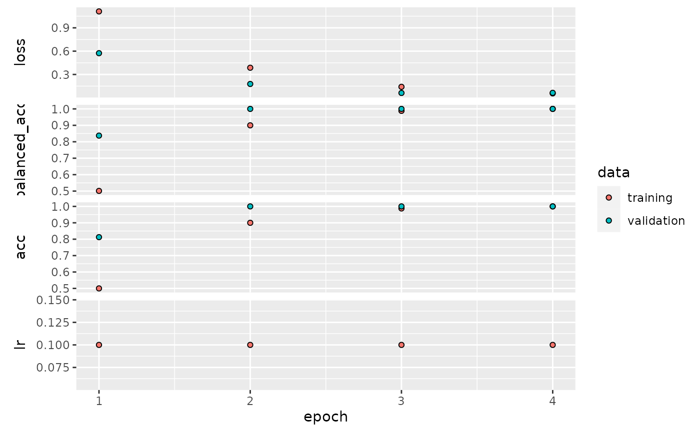
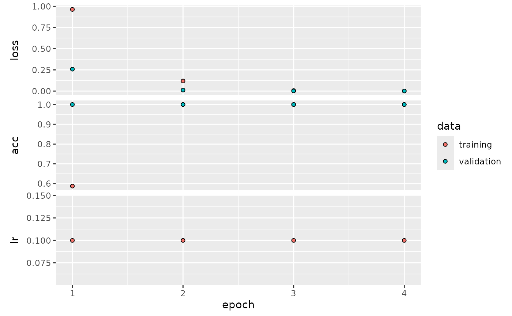
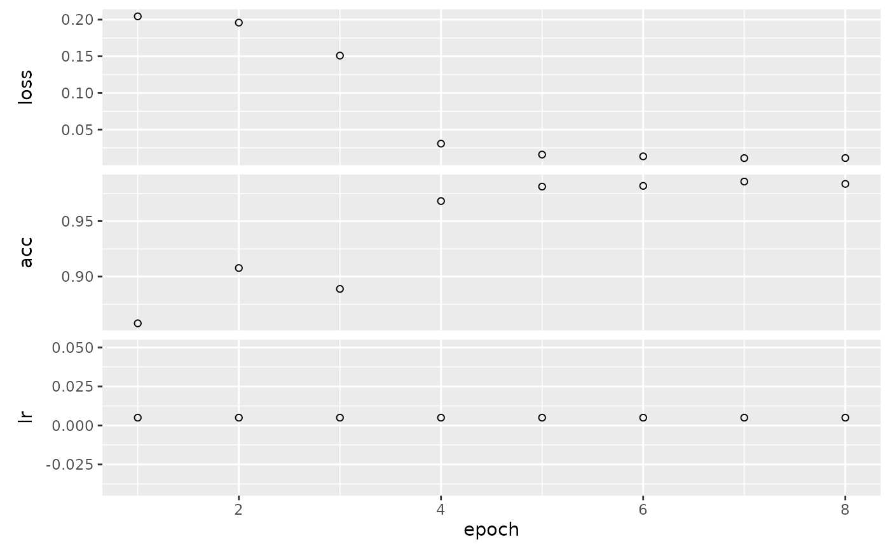
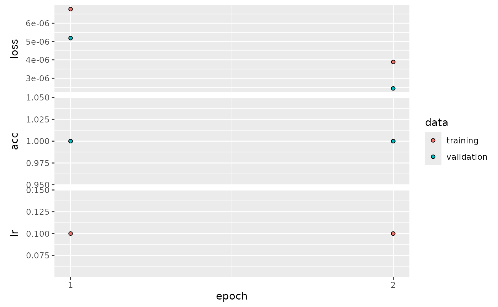
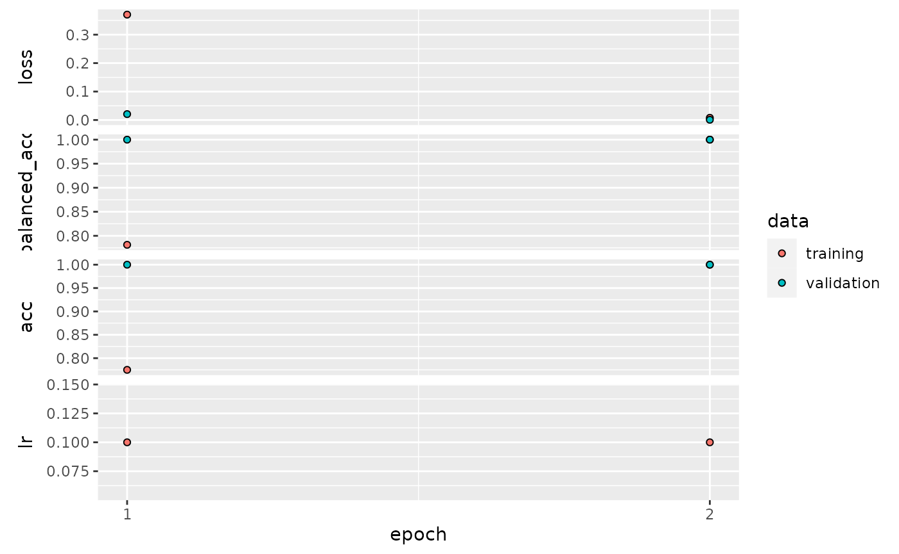

devtools::install_github("GenomeNet/deepG")
library(deepG)
library(magrittr)The deepG library offers several options to extract input/target pairs from data. We can differentiate between to main approach:
- Language model: predict a character or several characters in a sequence.
- Label Classification: map a label to a sequence.
Language model
With language model, we mean a model that predicts a character in a
sequence. We have several options to determine the output format of the
data generator using the output_format argument.
The output_format determines the shape of the output for
a language model, i.e. part of a sequence is the input \(X\) and another the target \(Y\). Assume a sequence abcdefg and
maxlen = 6. Output correspond as follows
“target_right”: \(X=\) abcdef, \(Y=\) g
“target_middle_lstm”: \(X =\) (\(X_1 =\) abc, \(X_2 =\) gfe), \(Y=\) d (note reversed order of \(X_2\))
“target_middle_cnn”: \(X =\) abcefg, \(Y =\) d
“wavenet”: \(X =\) abcdef, \(Y =\) bcdefg
Create dummy data
To test the different language model options, we create a simple dummy data set consisting of a repetition of the sequence AAACCCGGGTTTAAACCC….
vocabulary <- c("A", "C", "G", "T")
base_seq <- "AAACCCGGGTTT"
full_seq <- strrep(base_seq, 50)
df <- data.frame(Header = "header", Sequence = full_seq)
# create training fasta file
train_dir <- tempfile()
dir.create(train_dir)
microseq::writeFasta(df, file.path(train_dir, "train_1.fasta"))
# create validation fasta file (use same data as training)
val_dir <- tempfile()
dir.create(val_dir)
microseq::writeFasta(df, file.path(val_dir, "val_1.fasta"))Predict next character
Say we want to predict the next character in a sequence given the last 5 characters and our text consists of the letters A,C,G,T . First we have to create a model. We may use a model with 1 LSTM and 1 dense layer for predictions.
model <- create_model_lstm_cnn(
maxlen = 5,
layer_lstm = c(8),
layer_dense = c(4),
learning_rate = 0.1,
vocabulary_size = 4 # text consists of A,C,G,T
)## Model: "model"
## _________________________________________________________________
## Layer (type) Output Shape Param #
## =================================================================
## input_1 (InputLayer) [(None, 5, 4)] 0
##
## lstm (LSTM) (None, 8) 416
##
## dense (Dense) (None, 4) 36
##
## =================================================================
## Total params: 452 (1.77 KB)
## Trainable params: 452 (1.77 KB)
## Non-trainable params: 0 (0.00 Byte)
## _________________________________________________________________Next we have to specify the location of our training and validation data and the output format of the data generator
hist <- train_model(train_type = "lm", # running a language model
output_format = "target_right", # predict target at end of sequence
model = model,
path = train_dir,
path_val = val_dir,
steps_per_epoch = 5, # use 5 batches per epoch
train_val_ratio = 0.2, # use 20% of samples for validation compared to train
batch_size = 16,
epochs = 4)## Epoch 1/4
## 1/5 [=====>........................] - ETA: 3s - loss: 1.4633 - acc: 0.25005/5 [==============================] - 1s 65ms/step - loss: 1.0263 - acc: 0.7000 - val_loss: 0.4127 - val_acc: 0.9375 - lr: 0.1000
## Epoch 2/4
## 1/5 [=====>........................] - ETA: 0s - loss: 0.4608 - acc: 0.87505/5 [==============================] - 0s 19ms/step - loss: 0.2672 - acc: 0.9750 - val_loss: 0.1263 - val_acc: 1.0000 - lr: 0.1000
## Epoch 3/4
## 1/5 [=====>........................] - ETA: 0s - loss: 0.1768 - acc: 1.00005/5 [==============================] - 0s 16ms/step - loss: 0.0844 - acc: 1.0000 - val_loss: 0.0351 - val_acc: 1.0000 - lr: 0.1000
## Epoch 4/4
## 1/5 [=====>........................] - ETA: 0s - loss: 0.0371 - acc: 1.00005/5 [==============================] - 0s 18ms/step - loss: 0.0282 - acc: 1.0000 - val_loss: 0.0131 - val_acc: 1.0000 - lr: 0.1000
plot(hist)
Predict character in middle of sequence
If we want to predict a character in the middle of a sequence and use LSTM layers, we should split our input into two layers. One layer handles the sequence before and one the input after the target. If, for example
sequence: ACCGTGGAA
then first input corresponds to ACCG and second to
AAGG. We may create a model with two input layers using the
create_model_cnn_lstm_target_middle
model <- create_model_lstm_cnn_target_middle(
maxlen = 5,
layer_lstm = c(8),
layer_dense = c(4),
learning_rate = 0.1,
vocabulary_size = 4
)## Model: "model_1"
## __________________________________________________________________________________________________
## Layer (type) Output Shape Param # Connected to
## ==================================================================================================
## input_2 (InputLayer) [(None, 3, 4)] 0 []
##
## input_3 (InputLayer) [(None, 2, 4)] 0 []
##
## lstm_1 (LSTM) (None, 8) 416 ['input_2[0][0]']
##
## lstm_2 (LSTM) (None, 8) 416 ['input_3[0][0]']
##
## concatenate (Concatenate) (None, 16) 0 ['lstm_1[0][0]',
## 'lstm_2[0][0]']
##
## dense_1 (Dense) (None, 4) 68 ['concatenate[0][0]']
##
## ==================================================================================================
## Total params: 900 (3.52 KB)
## Trainable params: 900 (3.52 KB)
## Non-trainable params: 0 (0.00 Byte)
## __________________________________________________________________________________________________The train_model call is identical to the previous model,
except we have to change the output format of the generator by setting
output_format = "target_middle_lstm". This reverses the
order of the sequence after the target.
hist <- train_model(train_type = "lm", # running a language model
output_format = "target_middle_lstm", # predict target in middle of sequence
model = model,
path = train_dir,
path_val = val_dir,
steps_per_epoch = 5, # use 5 batches per epoch
train_val_ratio = 0.2, # use 20% of samples for validation compared to train
batch_size = 16,
epochs = 4)## Epoch 1/4
## 1/5 [=====>........................] - ETA: 5s - loss: 1.4213 - acc: 0.18755/5 [==============================] - 2s 95ms/step - loss: 1.0128 - acc: 0.6125 - val_loss: 0.4022 - val_acc: 0.8750 - lr: 0.1000
## Epoch 2/4
## 1/5 [=====>........................] - ETA: 0s - loss: 0.4443 - acc: 0.81255/5 [==============================] - 0s 21ms/step - loss: 0.2350 - acc: 0.9375 - val_loss: 0.0406 - val_acc: 1.0000 - lr: 0.1000
## Epoch 3/4
## 1/5 [=====>........................] - ETA: 0s - loss: 0.0442 - acc: 1.00005/5 [==============================] - 0s 21ms/step - loss: 0.0191 - acc: 1.0000 - val_loss: 0.0034 - val_acc: 1.0000 - lr: 0.1000
## Epoch 4/4
## 1/5 [=====>........................] - ETA: 0s - loss: 0.0034 - acc: 1.00005/5 [==============================] - 0s 20ms/step - loss: 0.0021 - acc: 1.0000 - val_loss: 6.9478e-04 - val_acc: 1.0000 - lr: 0.1000
plot(hist)
Masked language model
Here we mask some parts of the input sequence and the model tries to predict the masked regions. Can be used for training BERT-like models. See also this notebook. We can first check how the generator works.
# create dummy training data
nt_seq <- rep(c("A", "C", "G", "T"), each = 25) %>% paste(collapse = "") %>% strrep(10)
df <- data.frame(Sequence = nt_seq, Header = "seq_1")
fasta_path <- tempfile(fileext = ".fasta")
fasta_file <- microseq::writeFasta(df, fasta_path)
masked_lm <- list(mask_rate = 0.10, # replace 10% of input with special mask token
random_rate = 0.03, # set 3% of input to random value
identity_rate = 0.02, # leave 2% unchanged (and set sample weight to 1)
include_sw = TRUE) # 0,1 matrix showing where masking was applied
gen <- get_generator(path = fasta_path,
train_type = "masked_lm",
masked_lm = masked_lm,
batch_size = 1,
n_gram = 1,
n_gram_stride = 1,
return_int = TRUE,
maxlen = 100,
vocabulary = c("A", "C", "G", "T"))
z <- gen()
x <- z[[1]]
y <- z[[2]]
sw <- z[[3]]
df <- data.frame(x = x[1, ], y = y[1, ], sw = sw[1, ])
print(head(df), 10)## x y sw
## 1 5 1 1
## 2 1 1 0
## 3 1 1 0
## 4 1 1 0
## 5 1 1 0
## 6 1 1 0
print(df[ df$sw == 1, ])## x y sw
## 1 5 1 1
## 7 5 1 1
## 14 5 1 1
## 21 1 1 1
## 34 5 2 1
## 43 2 2 1
## 51 4 3 1
## 54 5 3 1
## 59 3 3 1
## 73 5 3 1
## 74 5 3 1
## 79 5 4 1
## 82 5 4 1
## 85 5 4 1
## 87 2 4 1Create the model architecture.
model <- create_model_transformer(
maxlen = 100,
vocabulary_size = 6,
embed_dim = 16,
ff_dim = 32,
pos_encoding = "embedding",
head_size = 20,
num_heads = 4,
layer_dense = 6,
flatten_method = "none",
last_layer_activation = "softmax",
loss_fn = "sparse_categorical_crossentropy",
solver = "adam",
learning_rate = 0.005
)## Model: "model_2"
## ________________________________________________________________________________
## Layer (type) Output Shape Param #
## ================================================================================
## input_4 (InputLayer) [(None, 100)] 0
## layer_pos_embedding (layer_pos_em (None, 100, 16) 1696
## bedding)
## layer_transformer_block (layer_tr (None, 100, 16) 6512
## ansformer_block)
## dense_4 (Dense) (None, 100, 6) 102
## ================================================================================
## Total params: 8310 (32.46 KB)
## Trainable params: 8310 (32.46 KB)
## Non-trainable params: 0 (0.00 Byte)
## ________________________________________________________________________________Train the model.
batch_size <- 128
masked_lm <- list(mask_rate = 0.10, random_rate = 0.03, identity_rate = 0.02, include_sw = TRUE)
hist <- train_model(model = model,
# training args
run_name = "bert_1",
epochs = 8,
steps_per_epoch = 75,
# generator args
maxlen = 100,
train_type = "masked_lm",
path = fasta_path,
path_val = NULL,
batch_size = batch_size,
step = 25,
masked_lm = masked_lm,
proportion_per_seq = 0.97,
return_int = TRUE)## Epoch 1/8
## 1/75 [..............................] - ETA: 1:04 - loss: 0.3223 - acc: 0.1191 2/75 [..............................] - ETA: 3s - loss: 0.3005 - acc: 0.1820 3/75 [>.............................] - ETA: 3s - loss: 0.2810 - acc: 0.2263 4/75 [>.............................] - ETA: 3s - loss: 0.2652 - acc: 0.2792 5/75 [=>............................] - ETA: 3s - loss: 0.2567 - acc: 0.3310 7/75 [=>............................] - ETA: 3s - loss: 0.2444 - acc: 0.4058 8/75 [==>...........................] - ETA: 3s - loss: 0.2397 - acc: 0.4415 9/75 [==>...........................] - ETA: 3s - loss: 0.2361 - acc: 0.483110/75 [===>..........................] - ETA: 3s - loss: 0.2329 - acc: 0.523311/75 [===>..........................] - ETA: 3s - loss: 0.2304 - acc: 0.557513/75 [====>.........................] - ETA: 3s - loss: 0.2268 - acc: 0.605814/75 [====>.........................] - ETA: 3s - loss: 0.2255 - acc: 0.624915/75 [=====>........................] - ETA: 3s - loss: 0.2243 - acc: 0.643116/75 [=====>........................] - ETA: 3s - loss: 0.2230 - acc: 0.659317/75 [=====>........................] - ETA: 3s - loss: 0.2219 - acc: 0.673519/75 [======>.......................] - ETA: 2s - loss: 0.2201 - acc: 0.697520/75 [=======>......................] - ETA: 2s - loss: 0.2192 - acc: 0.707821/75 [=======>......................] - ETA: 2s - loss: 0.2182 - acc: 0.717322/75 [=======>......................] - ETA: 2s - loss: 0.2175 - acc: 0.725523/75 [========>.....................] - ETA: 2s - loss: 0.2166 - acc: 0.733525/75 [=========>....................] - ETA: 2s - loss: 0.2153 - acc: 0.747026/75 [=========>....................] - ETA: 2s - loss: 0.2148 - acc: 0.752927/75 [=========>....................] - ETA: 2s - loss: 0.2143 - acc: 0.758428/75 [==========>...................] - ETA: 2s - loss: 0.2138 - acc: 0.763629/75 [==========>...................] - ETA: 2s - loss: 0.2133 - acc: 0.768331/75 [===========>..................] - ETA: 2s - loss: 0.2126 - acc: 0.776932/75 [===========>..................] - ETA: 2s - loss: 0.2122 - acc: 0.780933/75 [============>.................] - ETA: 2s - loss: 0.2118 - acc: 0.784534/75 [============>.................] - ETA: 2s - loss: 0.2114 - acc: 0.788035/75 [=============>................] - ETA: 2s - loss: 0.2110 - acc: 0.791236/75 [=============>................] - ETA: 2s - loss: 0.2106 - acc: 0.794437/75 [=============>................] - ETA: 2s - loss: 0.2103 - acc: 0.797338/75 [==============>...............] - ETA: 1s - loss: 0.2101 - acc: 0.800039/75 [==============>...............] - ETA: 1s - loss: 0.2099 - acc: 0.802740/75 [===============>..............] - ETA: 1s - loss: 0.2095 - acc: 0.805241/75 [===============>..............] - ETA: 1s - loss: 0.2092 - acc: 0.807642/75 [===============>..............] - ETA: 1s - loss: 0.2089 - acc: 0.809943/75 [================>.............] - ETA: 1s - loss: 0.2087 - acc: 0.812045/75 [=================>............] - ETA: 1s - loss: 0.2083 - acc: 0.816146/75 [=================>............] - ETA: 1s - loss: 0.2080 - acc: 0.818147/75 [=================>............] - ETA: 1s - loss: 0.2077 - acc: 0.819948/75 [==================>...........] - ETA: 1s - loss: 0.2076 - acc: 0.821649/75 [==================>...........] - ETA: 1s - loss: 0.2075 - acc: 0.823350/75 [===================>..........] - ETA: 1s - loss: 0.2074 - acc: 0.824851/75 [===================>..........] - ETA: 1s - loss: 0.2072 - acc: 0.826452/75 [===================>..........] - ETA: 1s - loss: 0.2070 - acc: 0.827953/75 [====================>.........] - ETA: 1s - loss: 0.2069 - acc: 0.829354/75 [====================>.........] - ETA: 1s - loss: 0.2066 - acc: 0.830755/75 [=====================>........] - ETA: 1s - loss: 0.2064 - acc: 0.832157/75 [=====================>........] - ETA: 0s - loss: 0.2061 - acc: 0.834758/75 [======================>.......] - ETA: 0s - loss: 0.2059 - acc: 0.835959/75 [======================>.......] - ETA: 0s - loss: 0.2057 - acc: 0.837160/75 [=======================>......] - ETA: 0s - loss: 0.2056 - acc: 0.838261/75 [=======================>......] - ETA: 0s - loss: 0.2054 - acc: 0.839362/75 [=======================>......] - ETA: 0s - loss: 0.2052 - acc: 0.840463/75 [========================>.....] - ETA: 0s - loss: 0.2051 - acc: 0.841564/75 [========================>.....] - ETA: 0s - loss: 0.2050 - acc: 0.842465/75 [=========================>....] - ETA: 0s - loss: 0.2050 - acc: 0.843366/75 [=========================>....] - ETA: 0s - loss: 0.2049 - acc: 0.844268/75 [==========================>...] - ETA: 0s - loss: 0.2048 - acc: 0.846069/75 [==========================>...] - ETA: 0s - loss: 0.2047 - acc: 0.846870/75 [===========================>..] - ETA: 0s - loss: 0.2046 - acc: 0.847671/75 [===========================>..] - ETA: 0s - loss: 0.2046 - acc: 0.848472/75 [===========================>..] - ETA: 0s - loss: 0.2045 - acc: 0.849173/75 [============================>.] - ETA: 0s - loss: 0.2044 - acc: 0.849974/75 [============================>.] - ETA: 0s - loss: 0.2043 - acc: 0.850775/75 [==============================] - ETA: 0s - loss: 0.2042 - acc: 0.851475/75 [==============================] - 5s 54ms/step - loss: 0.2042 - acc: 0.8514 - lr: 0.0050
## Epoch 2/8
## 1/75 [..............................] - ETA: 3s - loss: 0.1964 - acc: 0.9049 2/75 [..............................] - ETA: 4s - loss: 0.1985 - acc: 0.9034 3/75 [>.............................] - ETA: 4s - loss: 0.1978 - acc: 0.9048 4/75 [>.............................] - ETA: 3s - loss: 0.1980 - acc: 0.9046 5/75 [=>............................] - ETA: 3s - loss: 0.1988 - acc: 0.9040 6/75 [=>............................] - ETA: 3s - loss: 0.1977 - acc: 0.9046 8/75 [==>...........................] - ETA: 3s - loss: 0.1977 - acc: 0.9046 9/75 [==>...........................] - ETA: 3s - loss: 0.1976 - acc: 0.904510/75 [===>..........................] - ETA: 4s - loss: 0.1976 - acc: 0.904611/75 [===>..........................] - ETA: 4s - loss: 0.1974 - acc: 0.904712/75 [===>..........................] - ETA: 4s - loss: 0.1972 - acc: 0.905113/75 [====>.........................] - ETA: 3s - loss: 0.1974 - acc: 0.905014/75 [====>.........................] - ETA: 3s - loss: 0.1975 - acc: 0.904915/75 [=====>........................] - ETA: 3s - loss: 0.1974 - acc: 0.904817/75 [=====>........................] - ETA: 3s - loss: 0.1974 - acc: 0.904618/75 [======>.......................] - ETA: 3s - loss: 0.1973 - acc: 0.904719/75 [======>.......................] - ETA: 3s - loss: 0.1973 - acc: 0.904820/75 [=======>......................] - ETA: 3s - loss: 0.1971 - acc: 0.905021/75 [=======>......................] - ETA: 3s - loss: 0.1975 - acc: 0.904722/75 [=======>......................] - ETA: 3s - loss: 0.1973 - acc: 0.905023/75 [========>.....................] - ETA: 3s - loss: 0.1970 - acc: 0.905224/75 [========>.....................] - ETA: 3s - loss: 0.1970 - acc: 0.905125/75 [=========>....................] - ETA: 2s - loss: 0.1968 - acc: 0.905226/75 [=========>....................] - ETA: 2s - loss: 0.1968 - acc: 0.905127/75 [=========>....................] - ETA: 2s - loss: 0.1969 - acc: 0.905128/75 [==========>...................] - ETA: 2s - loss: 0.1970 - acc: 0.905129/75 [==========>...................] - ETA: 2s - loss: 0.1969 - acc: 0.905430/75 [===========>..................] - ETA: 2s - loss: 0.1968 - acc: 0.905431/75 [===========>..................] - ETA: 2s - loss: 0.1966 - acc: 0.905532/75 [===========>..................] - ETA: 2s - loss: 0.1968 - acc: 0.905333/75 [============>.................] - ETA: 2s - loss: 0.1970 - acc: 0.905134/75 [============>.................] - ETA: 2s - loss: 0.1969 - acc: 0.905335/75 [=============>................] - ETA: 2s - loss: 0.1969 - acc: 0.905436/75 [=============>................] - ETA: 2s - loss: 0.1969 - acc: 0.905537/75 [=============>................] - ETA: 2s - loss: 0.1968 - acc: 0.905538/75 [==============>...............] - ETA: 2s - loss: 0.1969 - acc: 0.905639/75 [==============>...............] - ETA: 2s - loss: 0.1970 - acc: 0.905640/75 [===============>..............] - ETA: 1s - loss: 0.1970 - acc: 0.905641/75 [===============>..............] - ETA: 1s - loss: 0.1969 - acc: 0.905742/75 [===============>..............] - ETA: 1s - loss: 0.1969 - acc: 0.905843/75 [================>.............] - ETA: 1s - loss: 0.1970 - acc: 0.905744/75 [================>.............] - ETA: 1s - loss: 0.1968 - acc: 0.905745/75 [=================>............] - ETA: 1s - loss: 0.1969 - acc: 0.905646/75 [=================>............] - ETA: 1s - loss: 0.1969 - acc: 0.905747/75 [=================>............] - ETA: 1s - loss: 0.1969 - acc: 0.905749/75 [==================>...........] - ETA: 1s - loss: 0.1969 - acc: 0.905750/75 [===================>..........] - ETA: 1s - loss: 0.1969 - acc: 0.905851/75 [===================>..........] - ETA: 1s - loss: 0.1968 - acc: 0.905852/75 [===================>..........] - ETA: 1s - loss: 0.1969 - acc: 0.905853/75 [====================>.........] - ETA: 1s - loss: 0.1969 - acc: 0.905754/75 [====================>.........] - ETA: 1s - loss: 0.1970 - acc: 0.905755/75 [=====================>........] - ETA: 1s - loss: 0.1970 - acc: 0.905856/75 [=====================>........] - ETA: 1s - loss: 0.1968 - acc: 0.906057/75 [=====================>........] - ETA: 1s - loss: 0.1968 - acc: 0.905958/75 [======================>.......] - ETA: 0s - loss: 0.1968 - acc: 0.906059/75 [======================>.......] - ETA: 0s - loss: 0.1969 - acc: 0.906061/75 [=======================>......] - ETA: 0s - loss: 0.1968 - acc: 0.906163/75 [========================>.....] - ETA: 0s - loss: 0.1967 - acc: 0.906264/75 [========================>.....] - ETA: 0s - loss: 0.1966 - acc: 0.906365/75 [=========================>....] - ETA: 0s - loss: 0.1966 - acc: 0.906366/75 [=========================>....] - ETA: 0s - loss: 0.1966 - acc: 0.906367/75 [=========================>....] - ETA: 0s - loss: 0.1966 - acc: 0.906368/75 [==========================>...] - ETA: 0s - loss: 0.1966 - acc: 0.906369/75 [==========================>...] - ETA: 0s - loss: 0.1965 - acc: 0.906370/75 [===========================>..] - ETA: 0s - loss: 0.1965 - acc: 0.906471/75 [===========================>..] - ETA: 0s - loss: 0.1965 - acc: 0.906472/75 [===========================>..] - ETA: 0s - loss: 0.1965 - acc: 0.906473/75 [============================>.] - ETA: 0s - loss: 0.1965 - acc: 0.906575/75 [==============================] - ETA: 0s - loss: 0.1965 - acc: 0.906575/75 [==============================] - 4s 55ms/step - loss: 0.1965 - acc: 0.9065 - lr: 0.0050
## Epoch 3/8
## 1/75 [..............................] - ETA: 4s - loss: 0.1936 - acc: 0.9098 2/75 [..............................] - ETA: 4s - loss: 0.1943 - acc: 0.9098 4/75 [>.............................] - ETA: 3s - loss: 0.1959 - acc: 0.9063 5/75 [=>............................] - ETA: 3s - loss: 0.1951 - acc: 0.9061 6/75 [=>............................] - ETA: 3s - loss: 0.1951 - acc: 0.9044 7/75 [=>............................] - ETA: 3s - loss: 0.1939 - acc: 0.9050 9/75 [==>...........................] - ETA: 3s - loss: 0.1941 - acc: 0.905010/75 [===>..........................] - ETA: 3s - loss: 0.1941 - acc: 0.904012/75 [===>..........................] - ETA: 3s - loss: 0.1944 - acc: 0.902713/75 [====>.........................] - ETA: 3s - loss: 0.1946 - acc: 0.902315/75 [=====>........................] - ETA: 3s - loss: 0.1944 - acc: 0.902616/75 [=====>........................] - ETA: 3s - loss: 0.1946 - acc: 0.902817/75 [=====>........................] - ETA: 3s - loss: 0.1947 - acc: 0.902918/75 [======>.......................] - ETA: 2s - loss: 0.1947 - acc: 0.902419/75 [======>.......................] - ETA: 2s - loss: 0.1948 - acc: 0.901821/75 [=======>......................] - ETA: 2s - loss: 0.1946 - acc: 0.902522/75 [=======>......................] - ETA: 2s - loss: 0.1945 - acc: 0.902823/75 [========>.....................] - ETA: 2s - loss: 0.1944 - acc: 0.903024/75 [========>.....................] - ETA: 2s - loss: 0.1943 - acc: 0.903025/75 [=========>....................] - ETA: 2s - loss: 0.1943 - acc: 0.903126/75 [=========>....................] - ETA: 2s - loss: 0.1942 - acc: 0.903427/75 [=========>....................] - ETA: 2s - loss: 0.1940 - acc: 0.903829/75 [==========>...................] - ETA: 2s - loss: 0.1940 - acc: 0.903630/75 [===========>..................] - ETA: 2s - loss: 0.1939 - acc: 0.903832/75 [===========>..................] - ETA: 2s - loss: 0.1939 - acc: 0.904133/75 [============>.................] - ETA: 2s - loss: 0.1939 - acc: 0.904235/75 [=============>................] - ETA: 2s - loss: 0.1941 - acc: 0.903736/75 [=============>................] - ETA: 2s - loss: 0.1941 - acc: 0.903937/75 [=============>................] - ETA: 1s - loss: 0.1941 - acc: 0.903938/75 [==============>...............] - ETA: 1s - loss: 0.1941 - acc: 0.904039/75 [==============>...............] - ETA: 1s - loss: 0.1941 - acc: 0.903541/75 [===============>..............] - ETA: 1s - loss: 0.1942 - acc: 0.903342/75 [===============>..............] - ETA: 1s - loss: 0.1941 - acc: 0.903543/75 [================>.............] - ETA: 1s - loss: 0.1941 - acc: 0.903744/75 [================>.............] - ETA: 1s - loss: 0.1940 - acc: 0.903845/75 [=================>............] - ETA: 1s - loss: 0.1939 - acc: 0.902946/75 [=================>............] - ETA: 1s - loss: 0.1939 - acc: 0.903047/75 [=================>............] - ETA: 1s - loss: 0.1938 - acc: 0.903248/75 [==================>...........] - ETA: 1s - loss: 0.1938 - acc: 0.903350/75 [===================>..........] - ETA: 1s - loss: 0.1937 - acc: 0.903251/75 [===================>..........] - ETA: 1s - loss: 0.1935 - acc: 0.903552/75 [===================>..........] - ETA: 1s - loss: 0.1935 - acc: 0.903653/75 [====================>.........] - ETA: 1s - loss: 0.1934 - acc: 0.903754/75 [====================>.........] - ETA: 1s - loss: 0.1934 - acc: 0.903956/75 [=====================>........] - ETA: 0s - loss: 0.1934 - acc: 0.904257/75 [=====================>........] - ETA: 0s - loss: 0.1934 - acc: 0.904358/75 [======================>.......] - ETA: 0s - loss: 0.1934 - acc: 0.904359/75 [======================>.......] - ETA: 0s - loss: 0.1933 - acc: 0.904461/75 [=======================>......] - ETA: 0s - loss: 0.1932 - acc: 0.904762/75 [=======================>......] - ETA: 0s - loss: 0.1931 - acc: 0.904963/75 [========================>.....] - ETA: 0s - loss: 0.1930 - acc: 0.905064/75 [========================>.....] - ETA: 0s - loss: 0.1930 - acc: 0.905065/75 [=========================>....] - ETA: 0s - loss: 0.1930 - acc: 0.905066/75 [=========================>....] - ETA: 0s - loss: 0.1930 - acc: 0.904967/75 [=========================>....] - ETA: 0s - loss: 0.1930 - acc: 0.904968/75 [==========================>...] - ETA: 0s - loss: 0.1930 - acc: 0.905070/75 [===========================>..] - ETA: 0s - loss: 0.1929 - acc: 0.904271/75 [===========================>..] - ETA: 0s - loss: 0.1929 - acc: 0.904173/75 [============================>.] - ETA: 0s - loss: 0.1928 - acc: 0.903974/75 [============================>.] - ETA: 0s - loss: 0.1927 - acc: 0.903575/75 [==============================] - 4s 52ms/step - loss: 0.1926 - acc: 0.9033 - lr: 0.0050
## Epoch 4/8
## 1/75 [..............................] - ETA: 3s - loss: 0.1888 - acc: 0.9126 2/75 [..............................] - ETA: 3s - loss: 0.1876 - acc: 0.9122 3/75 [>.............................] - ETA: 3s - loss: 0.1885 - acc: 0.8980 4/75 [>.............................] - ETA: 3s - loss: 0.1892 - acc: 0.8971 5/75 [=>............................] - ETA: 3s - loss: 0.1890 - acc: 0.8987 7/75 [=>............................] - ETA: 3s - loss: 0.1881 - acc: 0.9017 8/75 [==>...........................] - ETA: 3s - loss: 0.1874 - acc: 0.9025 9/75 [==>...........................] - ETA: 3s - loss: 0.1871 - acc: 0.901910/75 [===>..........................] - ETA: 3s - loss: 0.1877 - acc: 0.900511/75 [===>..........................] - ETA: 3s - loss: 0.1864 - acc: 0.900513/75 [====>.........................] - ETA: 3s - loss: 0.1852 - acc: 0.900914/75 [====>.........................] - ETA: 3s - loss: 0.1842 - acc: 0.901415/75 [=====>........................] - ETA: 3s - loss: 0.1828 - acc: 0.900516/75 [=====>........................] - ETA: 3s - loss: 0.1827 - acc: 0.899918/75 [======>.......................] - ETA: 3s - loss: 0.1805 - acc: 0.896019/75 [======>.......................] - ETA: 2s - loss: 0.1789 - acc: 0.895121/75 [=======>......................] - ETA: 2s - loss: 0.1781 - acc: 0.888422/75 [=======>......................] - ETA: 2s - loss: 0.1776 - acc: 0.884423/75 [========>.....................] - ETA: 2s - loss: 0.1763 - acc: 0.883724/75 [========>.....................] - ETA: 2s - loss: 0.1751 - acc: 0.882525/75 [=========>....................] - ETA: 2s - loss: 0.1741 - acc: 0.881726/75 [=========>....................] - ETA: 2s - loss: 0.1736 - acc: 0.880927/75 [=========>....................] - ETA: 2s - loss: 0.1730 - acc: 0.879228/75 [==========>...................] - ETA: 2s - loss: 0.1730 - acc: 0.877329/75 [==========>...................] - ETA: 2s - loss: 0.1722 - acc: 0.877030/75 [===========>..................] - ETA: 2s - loss: 0.1721 - acc: 0.875831/75 [===========>..................] - ETA: 2s - loss: 0.1713 - acc: 0.876233/75 [============>.................] - ETA: 2s - loss: 0.1699 - acc: 0.877234/75 [============>.................] - ETA: 2s - loss: 0.1693 - acc: 0.877636/75 [=============>................] - ETA: 2s - loss: 0.1680 - acc: 0.879337/75 [=============>................] - ETA: 2s - loss: 0.1676 - acc: 0.879239/75 [==============>...............] - ETA: 1s - loss: 0.1664 - acc: 0.879740/75 [===============>..............] - ETA: 1s - loss: 0.1659 - acc: 0.880241/75 [===============>..............] - ETA: 1s - loss: 0.1649 - acc: 0.881542/75 [===============>..............] - ETA: 1s - loss: 0.1642 - acc: 0.882043/75 [================>.............] - ETA: 1s - loss: 0.1640 - acc: 0.881345/75 [=================>............] - ETA: 1s - loss: 0.1624 - acc: 0.882646/75 [=================>............] - ETA: 1s - loss: 0.1617 - acc: 0.883047/75 [=================>............] - ETA: 1s - loss: 0.1611 - acc: 0.883148/75 [==================>...........] - ETA: 1s - loss: 0.1606 - acc: 0.882549/75 [==================>...........] - ETA: 1s - loss: 0.1600 - acc: 0.882351/75 [===================>..........] - ETA: 1s - loss: 0.1589 - acc: 0.881752/75 [===================>..........] - ETA: 1s - loss: 0.1582 - acc: 0.881953/75 [====================>.........] - ETA: 1s - loss: 0.1576 - acc: 0.881954/75 [====================>.........] - ETA: 1s - loss: 0.1570 - acc: 0.882056/75 [=====================>........] - ETA: 1s - loss: 0.1558 - acc: 0.882457/75 [=====================>........] - ETA: 0s - loss: 0.1550 - acc: 0.882958/75 [======================>.......] - ETA: 0s - loss: 0.1544 - acc: 0.883359/75 [======================>.......] - ETA: 0s - loss: 0.1538 - acc: 0.883560/75 [=======================>......] - ETA: 0s - loss: 0.1531 - acc: 0.883861/75 [=======================>......] - ETA: 0s - loss: 0.1524 - acc: 0.884462/75 [=======================>......] - ETA: 0s - loss: 0.1517 - acc: 0.884963/75 [========================>.....] - ETA: 0s - loss: 0.1509 - acc: 0.885664/75 [========================>.....] - ETA: 0s - loss: 0.1501 - acc: 0.886165/75 [=========================>....] - ETA: 0s - loss: 0.1493 - acc: 0.887066/75 [=========================>....] - ETA: 0s - loss: 0.1485 - acc: 0.887768/75 [==========================>...] - ETA: 0s - loss: 0.1468 - acc: 0.888969/75 [==========================>...] - ETA: 0s - loss: 0.1459 - acc: 0.889371/75 [===========================>..] - ETA: 0s - loss: 0.1440 - acc: 0.890272/75 [===========================>..] - ETA: 0s - loss: 0.1431 - acc: 0.890573/75 [============================>.] - ETA: 0s - loss: 0.1421 - acc: 0.891074/75 [============================>.] - ETA: 0s - loss: 0.1411 - acc: 0.891375/75 [==============================] - ETA: 0s - loss: 0.1400 - acc: 0.891875/75 [==============================] - 4s 53ms/step - loss: 0.1400 - acc: 0.8918 - lr: 0.0050
## Epoch 5/8
## 1/75 [..............................] - ETA: 3s - loss: 0.0590 - acc: 0.9364 2/75 [..............................] - ETA: 3s - loss: 0.0588 - acc: 0.9349 3/75 [>.............................] - ETA: 3s - loss: 0.0569 - acc: 0.9372 4/75 [>.............................] - ETA: 3s - loss: 0.0526 - acc: 0.9422 5/75 [=>............................] - ETA: 3s - loss: 0.0528 - acc: 0.9396 6/75 [=>............................] - ETA: 3s - loss: 0.0508 - acc: 0.9432 8/75 [==>...........................] - ETA: 3s - loss: 0.0474 - acc: 0.9472 9/75 [==>...........................] - ETA: 3s - loss: 0.0464 - acc: 0.947810/75 [===>..........................] - ETA: 3s - loss: 0.0454 - acc: 0.948811/75 [===>..........................] - ETA: 3s - loss: 0.0445 - acc: 0.949113/75 [====>.........................] - ETA: 3s - loss: 0.0432 - acc: 0.949414/75 [====>.........................] - ETA: 3s - loss: 0.0423 - acc: 0.950316/75 [=====>........................] - ETA: 3s - loss: 0.0409 - acc: 0.953017/75 [=====>........................] - ETA: 3s - loss: 0.0402 - acc: 0.953618/75 [======>.......................] - ETA: 2s - loss: 0.0395 - acc: 0.954519/75 [======>.......................] - ETA: 2s - loss: 0.0388 - acc: 0.955720/75 [=======>......................] - ETA: 2s - loss: 0.0381 - acc: 0.956721/75 [=======>......................] - ETA: 2s - loss: 0.0374 - acc: 0.957322/75 [=======>......................] - ETA: 2s - loss: 0.0369 - acc: 0.957623/75 [========>.....................] - ETA: 2s - loss: 0.0364 - acc: 0.958525/75 [=========>....................] - ETA: 2s - loss: 0.0352 - acc: 0.960426/75 [=========>....................] - ETA: 2s - loss: 0.0346 - acc: 0.961527/75 [=========>....................] - ETA: 2s - loss: 0.0341 - acc: 0.962228/75 [==========>...................] - ETA: 2s - loss: 0.0338 - acc: 0.962829/75 [==========>...................] - ETA: 2s - loss: 0.0332 - acc: 0.963731/75 [===========>..................] - ETA: 2s - loss: 0.0327 - acc: 0.964432/75 [===========>..................] - ETA: 2s - loss: 0.0322 - acc: 0.964934/75 [============>.................] - ETA: 2s - loss: 0.0314 - acc: 0.965835/75 [=============>................] - ETA: 2s - loss: 0.0311 - acc: 0.966037/75 [=============>................] - ETA: 1s - loss: 0.0302 - acc: 0.967138/75 [==============>...............] - ETA: 1s - loss: 0.0299 - acc: 0.967540/75 [===============>..............] - ETA: 1s - loss: 0.0295 - acc: 0.967841/75 [===============>..............] - ETA: 1s - loss: 0.0292 - acc: 0.968042/75 [===============>..............] - ETA: 1s - loss: 0.0289 - acc: 0.968543/75 [================>.............] - ETA: 1s - loss: 0.0287 - acc: 0.968944/75 [================>.............] - ETA: 1s - loss: 0.0285 - acc: 0.969045/75 [=================>............] - ETA: 1s - loss: 0.0282 - acc: 0.969246/75 [=================>............] - ETA: 1s - loss: 0.0279 - acc: 0.969647/75 [=================>............] - ETA: 1s - loss: 0.0277 - acc: 0.970048/75 [==================>...........] - ETA: 1s - loss: 0.0274 - acc: 0.970449/75 [==================>...........] - ETA: 1s - loss: 0.0270 - acc: 0.970750/75 [===================>..........] - ETA: 1s - loss: 0.0268 - acc: 0.970851/75 [===================>..........] - ETA: 1s - loss: 0.0266 - acc: 0.971152/75 [===================>..........] - ETA: 1s - loss: 0.0265 - acc: 0.971354/75 [====================>.........] - ETA: 1s - loss: 0.0260 - acc: 0.971855/75 [=====================>........] - ETA: 1s - loss: 0.0257 - acc: 0.972156/75 [=====================>........] - ETA: 0s - loss: 0.0254 - acc: 0.972557/75 [=====================>........] - ETA: 0s - loss: 0.0252 - acc: 0.972958/75 [======================>.......] - ETA: 0s - loss: 0.0250 - acc: 0.973059/75 [======================>.......] - ETA: 0s - loss: 0.0249 - acc: 0.973060/75 [=======================>......] - ETA: 0s - loss: 0.0249 - acc: 0.973061/75 [=======================>......] - ETA: 0s - loss: 0.0248 - acc: 0.973163/75 [========================>.....] - ETA: 0s - loss: 0.0244 - acc: 0.973464/75 [========================>.....] - ETA: 0s - loss: 0.0243 - acc: 0.973465/75 [=========================>....] - ETA: 0s - loss: 0.0244 - acc: 0.973466/75 [=========================>....] - ETA: 0s - loss: 0.0242 - acc: 0.973567/75 [=========================>....] - ETA: 0s - loss: 0.0241 - acc: 0.973769/75 [==========================>...] - ETA: 0s - loss: 0.0237 - acc: 0.974170/75 [===========================>..] - ETA: 0s - loss: 0.0237 - acc: 0.973971/75 [===========================>..] - ETA: 0s - loss: 0.0237 - acc: 0.973972/75 [===========================>..] - ETA: 0s - loss: 0.0236 - acc: 0.973973/75 [============================>.] - ETA: 0s - loss: 0.0235 - acc: 0.973975/75 [==============================] - ETA: 0s - loss: 0.0233 - acc: 0.974175/75 [==============================] - 4s 54ms/step - loss: 0.0233 - acc: 0.9741 - lr: 0.0050
## Epoch 6/8
## 1/75 [..............................] - ETA: 3s - loss: 0.0138 - acc: 0.9798 2/75 [..............................] - ETA: 3s - loss: 0.0124 - acc: 0.9839 3/75 [>.............................] - ETA: 3s - loss: 0.0128 - acc: 0.9842 4/75 [>.............................] - ETA: 3s - loss: 0.0129 - acc: 0.9837 5/75 [=>............................] - ETA: 3s - loss: 0.0120 - acc: 0.9845 6/75 [=>............................] - ETA: 3s - loss: 0.0120 - acc: 0.9844 7/75 [=>............................] - ETA: 3s - loss: 0.0120 - acc: 0.9841 8/75 [==>...........................] - ETA: 3s - loss: 0.0121 - acc: 0.9842 9/75 [==>...........................] - ETA: 3s - loss: 0.0125 - acc: 0.984310/75 [===>..........................] - ETA: 3s - loss: 0.0133 - acc: 0.983311/75 [===>..........................] - ETA: 3s - loss: 0.0129 - acc: 0.983912/75 [===>..........................] - ETA: 3s - loss: 0.0124 - acc: 0.984714/75 [====>.........................] - ETA: 3s - loss: 0.0123 - acc: 0.985315/75 [=====>........................] - ETA: 3s - loss: 0.0120 - acc: 0.985616/75 [=====>........................] - ETA: 3s - loss: 0.0119 - acc: 0.985917/75 [=====>........................] - ETA: 3s - loss: 0.0117 - acc: 0.986218/75 [======>.......................] - ETA: 2s - loss: 0.0115 - acc: 0.986419/75 [======>.......................] - ETA: 2s - loss: 0.0117 - acc: 0.986220/75 [=======>......................] - ETA: 2s - loss: 0.0120 - acc: 0.986021/75 [=======>......................] - ETA: 2s - loss: 0.0118 - acc: 0.986322/75 [=======>......................] - ETA: 2s - loss: 0.0119 - acc: 0.986023/75 [========>.....................] - ETA: 2s - loss: 0.0121 - acc: 0.985824/75 [========>.....................] - ETA: 2s - loss: 0.0121 - acc: 0.985825/75 [=========>....................] - ETA: 2s - loss: 0.0120 - acc: 0.986026/75 [=========>....................] - ETA: 2s - loss: 0.0121 - acc: 0.985927/75 [=========>....................] - ETA: 2s - loss: 0.0120 - acc: 0.986028/75 [==========>...................] - ETA: 2s - loss: 0.0119 - acc: 0.986129/75 [==========>...................] - ETA: 2s - loss: 0.0119 - acc: 0.986130/75 [===========>..................] - ETA: 2s - loss: 0.0118 - acc: 0.986132/75 [===========>..................] - ETA: 2s - loss: 0.0117 - acc: 0.986233/75 [============>.................] - ETA: 2s - loss: 0.0117 - acc: 0.986235/75 [=============>................] - ETA: 2s - loss: 0.0117 - acc: 0.986236/75 [=============>................] - ETA: 2s - loss: 0.0117 - acc: 0.986237/75 [=============>................] - ETA: 1s - loss: 0.0116 - acc: 0.986338/75 [==============>...............] - ETA: 1s - loss: 0.0119 - acc: 0.985839/75 [==============>...............] - ETA: 1s - loss: 0.0119 - acc: 0.985841/75 [===============>..............] - ETA: 1s - loss: 0.0119 - acc: 0.985742/75 [===============>..............] - ETA: 1s - loss: 0.0119 - acc: 0.985843/75 [================>.............] - ETA: 1s - loss: 0.0120 - acc: 0.985744/75 [================>.............] - ETA: 1s - loss: 0.0120 - acc: 0.985546/75 [=================>............] - ETA: 1s - loss: 0.0119 - acc: 0.985447/75 [=================>............] - ETA: 1s - loss: 0.0119 - acc: 0.985449/75 [==================>...........] - ETA: 1s - loss: 0.0117 - acc: 0.985650/75 [===================>..........] - ETA: 1s - loss: 0.0117 - acc: 0.985752/75 [===================>..........] - ETA: 1s - loss: 0.0116 - acc: 0.985853/75 [====================>.........] - ETA: 1s - loss: 0.0116 - acc: 0.985755/75 [=====================>........] - ETA: 1s - loss: 0.0116 - acc: 0.985556/75 [=====================>........] - ETA: 0s - loss: 0.0116 - acc: 0.985357/75 [=====================>........] - ETA: 0s - loss: 0.0116 - acc: 0.985358/75 [======================>.......] - ETA: 0s - loss: 0.0117 - acc: 0.985259/75 [======================>.......] - ETA: 0s - loss: 0.0116 - acc: 0.985360/75 [=======================>......] - ETA: 0s - loss: 0.0116 - acc: 0.985461/75 [=======================>......] - ETA: 0s - loss: 0.0117 - acc: 0.985262/75 [=======================>......] - ETA: 0s - loss: 0.0116 - acc: 0.985263/75 [========================>.....] - ETA: 0s - loss: 0.0115 - acc: 0.985364/75 [========================>.....] - ETA: 0s - loss: 0.0115 - acc: 0.985365/75 [=========================>....] - ETA: 0s - loss: 0.0115 - acc: 0.985467/75 [=========================>....] - ETA: 0s - loss: 0.0114 - acc: 0.985468/75 [==========================>...] - ETA: 0s - loss: 0.0114 - acc: 0.985469/75 [==========================>...] - ETA: 0s - loss: 0.0113 - acc: 0.985470/75 [===========================>..] - ETA: 0s - loss: 0.0113 - acc: 0.985571/75 [===========================>..] - ETA: 0s - loss: 0.0113 - acc: 0.985572/75 [===========================>..] - ETA: 0s - loss: 0.0113 - acc: 0.985573/75 [============================>.] - ETA: 0s - loss: 0.0113 - acc: 0.985574/75 [============================>.] - ETA: 0s - loss: 0.0113 - acc: 0.985475/75 [==============================] - 4s 52ms/step - loss: 0.0112 - acc: 0.9855 - lr: 0.0050
## Epoch 7/8
## 1/75 [..............................] - ETA: 3s - loss: 0.0119 - acc: 0.9824 2/75 [..............................] - ETA: 4s - loss: 0.0127 - acc: 0.9810 3/75 [>.............................] - ETA: 3s - loss: 0.0114 - acc: 0.9831 4/75 [>.............................] - ETA: 3s - loss: 0.0109 - acc: 0.9847 6/75 [=>............................] - ETA: 3s - loss: 0.0098 - acc: 0.9863 7/75 [=>............................] - ETA: 3s - loss: 0.0095 - acc: 0.9868 8/75 [==>...........................] - ETA: 3s - loss: 0.0091 - acc: 0.9872 9/75 [==>...........................] - ETA: 3s - loss: 0.0092 - acc: 0.986810/75 [===>..........................] - ETA: 3s - loss: 0.0091 - acc: 0.986911/75 [===>..........................] - ETA: 3s - loss: 0.0091 - acc: 0.987012/75 [===>..........................] - ETA: 3s - loss: 0.0088 - acc: 0.987713/75 [====>.........................] - ETA: 3s - loss: 0.0086 - acc: 0.988015/75 [=====>........................] - ETA: 3s - loss: 0.0086 - acc: 0.987516/75 [=====>........................] - ETA: 3s - loss: 0.0086 - acc: 0.987617/75 [=====>........................] - ETA: 3s - loss: 0.0086 - acc: 0.987718/75 [======>.......................] - ETA: 3s - loss: 0.0087 - acc: 0.987619/75 [======>.......................] - ETA: 3s - loss: 0.0088 - acc: 0.987520/75 [=======>......................] - ETA: 2s - loss: 0.0087 - acc: 0.987721/75 [=======>......................] - ETA: 2s - loss: 0.0088 - acc: 0.987722/75 [=======>......................] - ETA: 2s - loss: 0.0087 - acc: 0.987923/75 [========>.....................] - ETA: 2s - loss: 0.0087 - acc: 0.987924/75 [========>.....................] - ETA: 2s - loss: 0.0088 - acc: 0.987825/75 [=========>....................] - ETA: 2s - loss: 0.0087 - acc: 0.988027/75 [=========>....................] - ETA: 2s - loss: 0.0087 - acc: 0.988028/75 [==========>...................] - ETA: 2s - loss: 0.0087 - acc: 0.987929/75 [==========>...................] - ETA: 2s - loss: 0.0086 - acc: 0.988130/75 [===========>..................] - ETA: 2s - loss: 0.0087 - acc: 0.988031/75 [===========>..................] - ETA: 2s - loss: 0.0087 - acc: 0.988032/75 [===========>..................] - ETA: 2s - loss: 0.0088 - acc: 0.988033/75 [============>.................] - ETA: 2s - loss: 0.0087 - acc: 0.988134/75 [============>.................] - ETA: 2s - loss: 0.0089 - acc: 0.987935/75 [=============>................] - ETA: 2s - loss: 0.0088 - acc: 0.988136/75 [=============>................] - ETA: 2s - loss: 0.0089 - acc: 0.988037/75 [=============>................] - ETA: 2s - loss: 0.0089 - acc: 0.987838/75 [==============>...............] - ETA: 1s - loss: 0.0091 - acc: 0.987639/75 [==============>...............] - ETA: 1s - loss: 0.0091 - acc: 0.987640/75 [===============>..............] - ETA: 1s - loss: 0.0091 - acc: 0.987741/75 [===============>..............] - ETA: 1s - loss: 0.0093 - acc: 0.987542/75 [===============>..............] - ETA: 1s - loss: 0.0094 - acc: 0.987443/75 [================>.............] - ETA: 1s - loss: 0.0094 - acc: 0.987444/75 [================>.............] - ETA: 1s - loss: 0.0095 - acc: 0.987445/75 [=================>............] - ETA: 1s - loss: 0.0096 - acc: 0.987347/75 [=================>............] - ETA: 1s - loss: 0.0096 - acc: 0.987248/75 [==================>...........] - ETA: 1s - loss: 0.0098 - acc: 0.987049/75 [==================>...........] - ETA: 1s - loss: 0.0099 - acc: 0.986950/75 [===================>..........] - ETA: 1s - loss: 0.0099 - acc: 0.986951/75 [===================>..........] - ETA: 1s - loss: 0.0099 - acc: 0.986953/75 [====================>.........] - ETA: 1s - loss: 0.0100 - acc: 0.986854/75 [====================>.........] - ETA: 1s - loss: 0.0100 - acc: 0.986855/75 [=====================>........] - ETA: 1s - loss: 0.0101 - acc: 0.986656/75 [=====================>........] - ETA: 1s - loss: 0.0100 - acc: 0.986757/75 [=====================>........] - ETA: 0s - loss: 0.0100 - acc: 0.986759/75 [======================>.......] - ETA: 0s - loss: 0.0099 - acc: 0.986960/75 [=======================>......] - ETA: 0s - loss: 0.0099 - acc: 0.986961/75 [=======================>......] - ETA: 0s - loss: 0.0099 - acc: 0.986862/75 [=======================>......] - ETA: 0s - loss: 0.0099 - acc: 0.986863/75 [========================>.....] - ETA: 0s - loss: 0.0098 - acc: 0.986965/75 [=========================>....] - ETA: 0s - loss: 0.0098 - acc: 0.987066/75 [=========================>....] - ETA: 0s - loss: 0.0098 - acc: 0.986967/75 [=========================>....] - ETA: 0s - loss: 0.0097 - acc: 0.987068/75 [==========================>...] - ETA: 0s - loss: 0.0097 - acc: 0.986969/75 [==========================>...] - ETA: 0s - loss: 0.0097 - acc: 0.986870/75 [===========================>..] - ETA: 0s - loss: 0.0097 - acc: 0.986871/75 [===========================>..] - ETA: 0s - loss: 0.0097 - acc: 0.986972/75 [===========================>..] - ETA: 0s - loss: 0.0097 - acc: 0.986973/75 [============================>.] - ETA: 0s - loss: 0.0097 - acc: 0.986774/75 [============================>.] - ETA: 0s - loss: 0.0097 - acc: 0.986775/75 [==============================] - 4s 53ms/step - loss: 0.0097 - acc: 0.9867 - lr: 0.0050
## Epoch 8/8
## 1/75 [..............................] - ETA: 3s - loss: 0.0139 - acc: 0.9796 2/75 [..............................] - ETA: 3s - loss: 0.0130 - acc: 0.9816 3/75 [>.............................] - ETA: 3s - loss: 0.0108 - acc: 0.9845 4/75 [>.............................] - ETA: 3s - loss: 0.0094 - acc: 0.9857 5/75 [=>............................] - ETA: 3s - loss: 0.0097 - acc: 0.9856 6/75 [=>............................] - ETA: 3s - loss: 0.0097 - acc: 0.9860 7/75 [=>............................] - ETA: 3s - loss: 0.0093 - acc: 0.9865 8/75 [==>...........................] - ETA: 3s - loss: 0.0091 - acc: 0.986910/75 [===>..........................] - ETA: 3s - loss: 0.0091 - acc: 0.987111/75 [===>..........................] - ETA: 3s - loss: 0.0094 - acc: 0.986512/75 [===>..........................] - ETA: 3s - loss: 0.0094 - acc: 0.986513/75 [====>.........................] - ETA: 3s - loss: 0.0096 - acc: 0.985714/75 [====>.........................] - ETA: 3s - loss: 0.0096 - acc: 0.985716/75 [=====>........................] - ETA: 3s - loss: 0.0097 - acc: 0.985917/75 [=====>........................] - ETA: 3s - loss: 0.0095 - acc: 0.986018/75 [======>.......................] - ETA: 3s - loss: 0.0095 - acc: 0.986219/75 [======>.......................] - ETA: 2s - loss: 0.0095 - acc: 0.986520/75 [=======>......................] - ETA: 2s - loss: 0.0095 - acc: 0.986622/75 [=======>......................] - ETA: 2s - loss: 0.0093 - acc: 0.987023/75 [========>.....................] - ETA: 2s - loss: 0.0093 - acc: 0.987224/75 [========>.....................] - ETA: 2s - loss: 0.0093 - acc: 0.987225/75 [=========>....................] - ETA: 2s - loss: 0.0095 - acc: 0.987126/75 [=========>....................] - ETA: 2s - loss: 0.0094 - acc: 0.987428/75 [==========>...................] - ETA: 2s - loss: 0.0092 - acc: 0.987829/75 [==========>...................] - ETA: 2s - loss: 0.0093 - acc: 0.987731/75 [===========>..................] - ETA: 2s - loss: 0.0090 - acc: 0.988132/75 [===========>..................] - ETA: 2s - loss: 0.0089 - acc: 0.988233/75 [============>.................] - ETA: 2s - loss: 0.0090 - acc: 0.988034/75 [============>.................] - ETA: 2s - loss: 0.0089 - acc: 0.987935/75 [=============>................] - ETA: 2s - loss: 0.0089 - acc: 0.988136/75 [=============>................] - ETA: 2s - loss: 0.0089 - acc: 0.987937/75 [=============>................] - ETA: 2s - loss: 0.0089 - acc: 0.987938/75 [==============>...............] - ETA: 1s - loss: 0.0089 - acc: 0.987839/75 [==============>...............] - ETA: 1s - loss: 0.0090 - acc: 0.987640/75 [===============>..............] - ETA: 1s - loss: 0.0090 - acc: 0.987542/75 [===============>..............] - ETA: 1s - loss: 0.0089 - acc: 0.987743/75 [================>.............] - ETA: 1s - loss: 0.0090 - acc: 0.987744/75 [================>.............] - ETA: 1s - loss: 0.0089 - acc: 0.987845/75 [=================>............] - ETA: 1s - loss: 0.0089 - acc: 0.987846/75 [=================>............] - ETA: 1s - loss: 0.0089 - acc: 0.987847/75 [=================>............] - ETA: 1s - loss: 0.0089 - acc: 0.987948/75 [==================>...........] - ETA: 1s - loss: 0.0089 - acc: 0.987849/75 [==================>...........] - ETA: 1s - loss: 0.0089 - acc: 0.987850/75 [===================>..........] - ETA: 1s - loss: 0.0088 - acc: 0.987951/75 [===================>..........] - ETA: 1s - loss: 0.0088 - acc: 0.988052/75 [===================>..........] - ETA: 1s - loss: 0.0088 - acc: 0.988054/75 [====================>.........] - ETA: 1s - loss: 0.0088 - acc: 0.988155/75 [=====================>........] - ETA: 1s - loss: 0.0088 - acc: 0.988056/75 [=====================>........] - ETA: 0s - loss: 0.0089 - acc: 0.987857/75 [=====================>........] - ETA: 0s - loss: 0.0089 - acc: 0.987858/75 [======================>.......] - ETA: 0s - loss: 0.0089 - acc: 0.987959/75 [======================>.......] - ETA: 0s - loss: 0.0089 - acc: 0.987960/75 [=======================>......] - ETA: 0s - loss: 0.0089 - acc: 0.987961/75 [=======================>......] - ETA: 0s - loss: 0.0088 - acc: 0.988063/75 [========================>.....] - ETA: 0s - loss: 0.0088 - acc: 0.988164/75 [========================>.....] - ETA: 0s - loss: 0.0088 - acc: 0.988165/75 [=========================>....] - ETA: 0s - loss: 0.0088 - acc: 0.988166/75 [=========================>....] - ETA: 0s - loss: 0.0088 - acc: 0.988167/75 [=========================>....] - ETA: 0s - loss: 0.0087 - acc: 0.988268/75 [==========================>...] - ETA: 0s - loss: 0.0087 - acc: 0.988169/75 [==========================>...] - ETA: 0s - loss: 0.0087 - acc: 0.988170/75 [===========================>..] - ETA: 0s - loss: 0.0087 - acc: 0.988171/75 [===========================>..] - ETA: 0s - loss: 0.0087 - acc: 0.988272/75 [===========================>..] - ETA: 0s - loss: 0.0087 - acc: 0.988374/75 [============================>.] - ETA: 0s - loss: 0.0087 - acc: 0.988375/75 [==============================] - ETA: 0s - loss: 0.0086 - acc: 0.988475/75 [==============================] - 4s 53ms/step - loss: 0.0086 - acc: 0.9884 - lr: 0.0050## Training done.
plot(hist)
Evaluate the trained model.
gen <- get_generator(path = fasta_path,
train_type = "masked_lm",
masked_lm = masked_lm,
batch_size = 1,
n_gram = 1,
n_gram_stride = 1,
return_int = TRUE,
maxlen = 100,
vocabulary = c("A", "C", "G", "T"))
z <- gen()
x <- z[[1]]
y <- z[[2]]
sw <- z[[3]]
pred <- model$predict(x) ## 1/1 [==============================] - ETA: 0s1/1 [==============================] - 0s 107ms/step
pred <- apply(pred[1,,], 1, which.max) - 1
df <- data.frame(x = x[1, ], sw = sw[1, ], y = y[1, ], pred = pred)
head(df)## x sw y pred
## 1 5 1 1 1
## 2 1 0 1 1
## 3 1 0 1 1
## 4 1 0 1 1
## 5 1 0 1 1
## 6 1 0 1 1
df[df$sw == 1, ]## x sw y pred
## 1 5 1 1 1
## 7 5 1 1 1
## 14 5 1 1 1
## 21 1 1 1 1
## 34 5 1 2 2
## 43 2 1 2 2
## 51 4 1 3 3
## 54 5 1 3 3
## 59 3 1 3 3
## 73 5 1 3 3
## 74 5 1 3 3
## 79 5 1 4 4
## 82 5 1 4 4
## 85 5 1 4 4
## 87 2 1 4 4
df2 <- df[df$sw == 1, ]
table(df2$pred, df2$y)##
## 1 2 3 4
## 1 4 0 0 0
## 2 0 2 0 0
## 3 0 0 5 0
## 4 0 0 0 4Label classification
With label classification, we describe the task of mapping a label to a sequence. For example: given the input ACGACCG, does the sequence belong to a viral or bacterial genome?
deepG offers three options to map a label to a sequence
the label gets read from the fasta header
files from every class are in separate folders
get label from csv file
Create dummy data
To test label classification, we create a simple dummy data set. One class consists of random sequences using just A and C and second class uses just G and T.
# create training fasta files
train_dir_1 <- tempfile()
train_dir_2 <- tempfile()
dir.create(train_dir_1)
dir.create(train_dir_2)
train_dir <- list(train_dir_1, train_dir_2)
for (i in 1:2) {
if (i == 1) {
vocabulary <- c("A", "C")
header <- "label_1"
fasta_name_start <- "label_1_train_file"
} else {
vocabulary <- c("G", "T")
header <- "label_2"
fasta_name_start <- "label_2_train_file"
}
create_dummy_data(file_path = train_dir[[i]],
num_files = 3,
seq_length = 20,
num_seq = 5,
header = header,
fasta_name_start = fasta_name_start,
vocabulary = vocabulary)
}
# create validation fasta files
val_dir_1 <- tempfile()
val_dir_2 <- tempfile()
dir.create(val_dir_1)
dir.create(val_dir_2)
val_dir <- list(val_dir_1, val_dir_2)
for (i in 1:2) {
if (i == 1) {
vocabulary <- c("A", "C")
header <- "label_1"
fasta_name_start <- "label_1_val_file"
} else {
vocabulary <- c("G", "T")
header <- "label_2"
fasta_name_start <- "label_2_val_file"
}
create_dummy_data(file_path = val_dir[[i]],
num_files = 3,
seq_length = 20,
num_seq = 5,
header = header,
fasta_name_start = fasta_name_start,
vocabulary = vocabulary)
} Label by folder
In this approach, we put all data from one class into a separate
folder. Say we want to classify if a sequence belongs to a viral or
bacterial genome. We may put all virus and bacteria files into their own
folder. In this case the path and path_val
arguments should be vectors, where each entry is the path to one
class.
First we have to create a model. We may use a model with 1 LSTM and 1 dense layer for predictions. An input sequence has length 5.
model <- create_model_lstm_cnn(
maxlen = 5,
layer_lstm = c(8),
learning_rate = 0.1,
layer_dense = c(2), # binary classification
vocabulary_size = 4 # text consists of A,C,G,T
)## Model: "model_3"
## _________________________________________________________________
## Layer (type) Output Shape Param #
## =================================================================
## input_5 (InputLayer) [(None, 5, 4)] 0
##
## lstm_3 (LSTM) (None, 8) 416
##
## dense_5 (Dense) (None, 2) 18
##
## =================================================================
## Total params: 434 (1.70 KB)
## Trainable params: 434 (1.70 KB)
## Non-trainable params: 0 (0.00 Byte)
## _________________________________________________________________
train_model(train_type = "label_folder", # reading label from folder
model = model,
path = c(train_dir_1, # note that path has two entries
train_dir_2),
path_val = c(val_dir_1,
val_dir_2),
steps_per_epoch = 5, # use 5 batches per epoch
train_val_ratio = 0.2,
batch_size = 8,
epochs = 2,
vocabulary_label = c("label_1", "label_2") # names of classes
)## Epoch 1/2
## 1/5 [=====>........................] - ETA: 3s - loss: 0.7256 - acc: 0.37505/5 [==============================] - 1s 65ms/step - loss: 0.3478 - acc: 0.8750 - val_loss: 0.0136 - val_acc: 1.0000 - lr: 0.1000
## Epoch 2/2
## 1/5 [=====>........................] - ETA: 0s - loss: 0.0138 - acc: 1.00005/5 [==============================] - 0s 19ms/step - loss: 0.0052 - acc: 1.0000 - val_loss: 3.3623e-04 - val_acc: 1.0000 - lr: 0.1000##
## Final epoch (plot to see history):
## loss: 0.005179
## acc: 1
## val_loss: 0.0003362
## val_acc: 1
## lr: 0.1Label by fasta header
The fasta headers in our dummy data have the names “label_1” or “label_2”
files <- list.files(train_dir_1, full.names = TRUE)
fasta_file <- microseq::readFasta(files[1])
head(fasta_file)## # A tibble: 5 × 2
## Header Sequence
## <chr> <chr>
## 1 label_1 CCCACCCCCAACACCAACCC
## 2 label_1 AACCCCCCACCCCAAACCAA
## 3 label_1 CCCAAACACACAACCAAACC
## 4 label_1 ACCCAAAACAAAAACCCCAC
## 5 label_1 CCCAACAACCAAACACACCC
train_model(train_type = "label_header", # reading label from fasta header
model = model,
path = train_dir,
path_val = val_dir,
steps_per_epoch = 5,
train_val_ratio = 0.2,
batch_size = 8,
epochs = 2,
vocabulary_label = c("label_1", "label_2") # names of labels
)## Epoch 1/2
## 1/5 [=====>........................] - ETA: 0s - loss: 3.7113e-04 - acc: 1.00005/5 [==============================] - 0s 23ms/step - loss: 1.8041e-04 - acc: 1.0000 - val_loss: 2.8997e-05 - val_acc: 1.0000 - lr: 0.1000
## Epoch 2/2
## 1/5 [=====>........................] - ETA: 0s - loss: 2.9146e-05 - acc: 1.00005/5 [==============================] - ETA: 0s - loss: 2.7459e-05 - acc: 1.00005/5 [==============================] - 0s 26ms/step - loss: 2.7459e-05 - acc: 1.0000 - val_loss: 2.3991e-05 - val_acc: 1.0000 - lr: 0.1000##
## Final epoch (plot to see history):
## loss: 0.00002746
## acc: 1
## val_loss: 0.00002399
## val_acc: 1
## lr: 0.1Label from csv file
In this approach we extract the sequence label by mapping the current file name to a csv table.
files_1 <- basename(list.files(c(train_dir_1, val_dir_1)))
files_2 <- basename(list.files(c(train_dir_2, val_dir_2)))
file <- c(files_1, files_2)
label_1 <- stringr::str_detect(file, "label_1") %>% as.integer()
label_2 <- stringr::str_detect(file, "label_2") %>% as.integer()
df <- data.frame(file, label_1, label_2)
df## file label_1 label_2
## 1 label_1_train_file_1.fasta 1 0
## 2 label_1_train_file_2.fasta 1 0
## 3 label_1_train_file_3.fasta 1 0
## 4 label_1_val_file_1.fasta 1 0
## 5 label_1_val_file_2.fasta 1 0
## 6 label_1_val_file_3.fasta 1 0
## 7 label_2_train_file_1.fasta 0 1
## 8 label_2_train_file_2.fasta 0 1
## 9 label_2_train_file_3.fasta 0 1
## 10 label_2_val_file_1.fasta 0 1
## 11 label_2_val_file_2.fasta 0 1
## 12 label_2_val_file_3.fasta 0 1
csv_path <- tempfile(fileext = ".csv")
write.csv(df, csv_path, row.names = FALSE)
hist <- train_model(train_type = "label_csv",
target_from_csv = csv_path,
model = model,
path = train_dir,
path_val = val_dir,
steps_per_epoch = 5,
train_val_ratio = 0.2,
batch_size = 8,
epochs = 2)## Epoch 1/2
## 1/5 [=====>........................] - ETA: 0s - loss: 5.9455e-06 - acc: 1.00005/5 [==============================] - 0s 22ms/step - loss: 1.0404e-05 - acc: 1.0000 - val_loss: 2.2948e-06 - val_acc: 1.0000 - lr: 0.1000
## Epoch 2/2
## 1/5 [=====>........................] - ETA: 0s - loss: 2.2650e-06 - acc: 1.00005/5 [==============================] - 0s 24ms/step - loss: 5.9783e-06 - acc: 1.0000 - val_loss: 8.8363e-06 - val_acc: 1.0000 - lr: 0.1000
plot(hist)
Training with rds files
We can also use rds files files as input, where the data must already
be preprocessed. We may use the dataset_from_gen function
to create rds files from fasta files.
rds_folder_train <- tempfile()
rds_folder_val <- tempfile()
dir.create(rds_folder_train)
dir.create(rds_folder_val)
for (data_type in c("train", "val")) {
if (data_type == "train") {
output_path <- rds_folder_train
path_corpus <- train_dir
} else {
output_path <- rds_folder_val
path_corpus <- val_dir
}
dataset_from_gen(output_path = output_path,
iterations = 25, # create 25 rds files
train_type = "label_folder",
path_corpus = path_corpus,
batch_size = 128,
maxlen = 5,
step = 5,
vocabulary = c("a", "c", "g", "t"),
file_name_start = "batch_")
}We created 25 files for training and validation with preprocessed data.
train_files <- list.files(rds_folder_train, full.names = TRUE)
basename(train_files)## [1] "batch_1.rds" "batch_10.rds" "batch_11.rds" "batch_12.rds" "batch_13.rds"
## [6] "batch_14.rds" "batch_15.rds" "batch_16.rds" "batch_17.rds" "batch_18.rds"
## [11] "batch_19.rds" "batch_2.rds" "batch_20.rds" "batch_21.rds" "batch_22.rds"
## [16] "batch_23.rds" "batch_24.rds" "batch_25.rds" "batch_3.rds" "batch_4.rds"
## [21] "batch_5.rds" "batch_6.rds" "batch_7.rds" "batch_8.rds" "batch_9.rds"## [1] 128 5 4
dim(y)## [1] 128 2
x[1,,]## [,1] [,2] [,3] [,4]
## [1,] 0 1 0 0
## [2,] 0 1 0 0
## [3,] 0 1 0 0
## [4,] 1 0 0 0
## [5,] 0 1 0 0
y[1,]## [1] 1 0We can now use these files for training.
model <- create_model_lstm_cnn(
maxlen = 5,
layer_lstm = c(8),
learning_rate = 0.1,
layer_dense = c(2))## Model: "model_4"
## _________________________________________________________________
## Layer (type) Output Shape Param #
## =================================================================
## input_6 (InputLayer) [(None, 5, 4)] 0
##
## lstm_4 (LSTM) (None, 8) 416
##
## dense_6 (Dense) (None, 2) 18
##
## =================================================================
## Total params: 434 (1.70 KB)
## Trainable params: 434 (1.70 KB)
## Non-trainable params: 0 (0.00 Byte)
## _________________________________________________________________
hist <- train_model(train_type = "label_rds",
model = model,
path = rds_folder_train,
path_val = rds_folder_val,
steps_per_epoch = 5,
format = "rds",
batch_size = 8,
epochs = 2)## Epoch 1/2
## 1/5 [=====>........................] - ETA: 2s - loss: 0.6628 - acc: 0.75005/5 [==============================] - 1s 59ms/step - loss: 0.3644 - acc: 0.8250 - val_loss: 0.0381 - val_acc: 1.0000 - lr: 0.1000
## Epoch 2/2
## 1/5 [=====>........................] - ETA: 0s - loss: 0.0248 - acc: 1.00005/5 [==============================] - 0s 13ms/step - loss: 0.0073 - acc: 1.0000 - val_loss: 3.0245e-04 - val_acc: 1.0000 - lr: 0.1000
plot(hist)